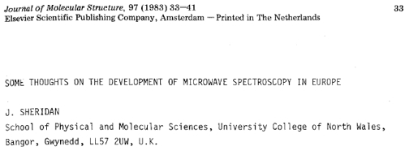

About John
Sheridan John
Sheridan

I should try to point to particular landmarks in the development of the field
which originated in Europe. It must be admitted that many of the most basic
advances belong of necessity to the early American-dominated period. European
landmarks to which I can point certainly include the first use of microwave-microwave
double resonance spectroscopy by Professor Gozzini and his colleagues at the
University of Pisa in 1959 (ref.lO), and the striking studies at short wavelengths
with acoustic detectors made by Dr Krupnov and his group in the U.S.S.R. from about 1970.
|